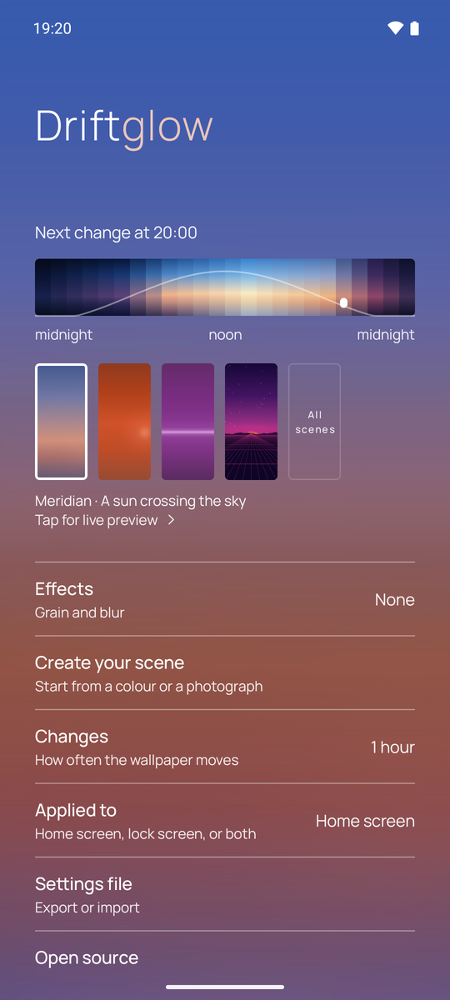
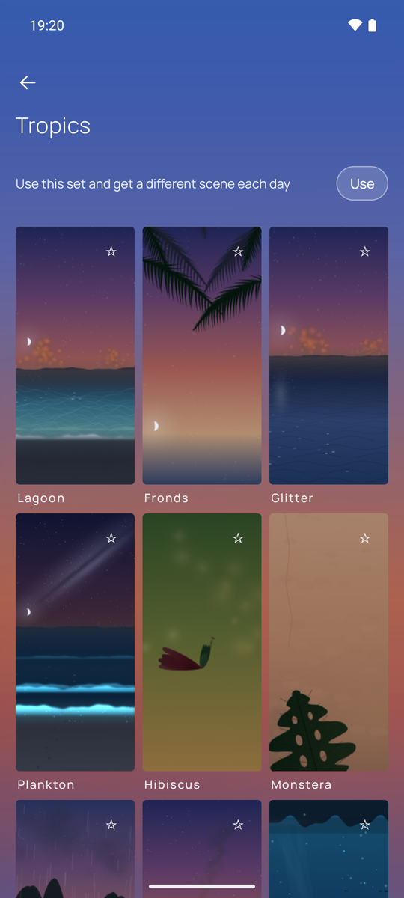
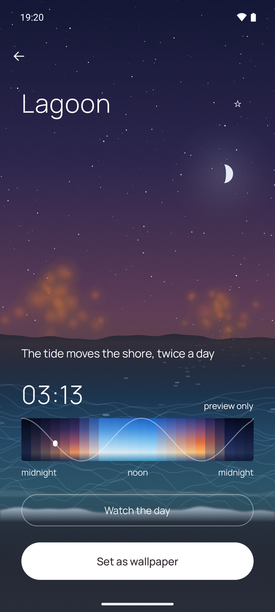
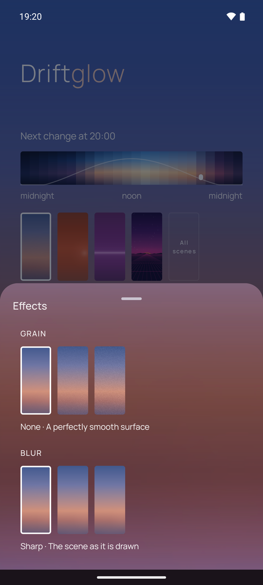
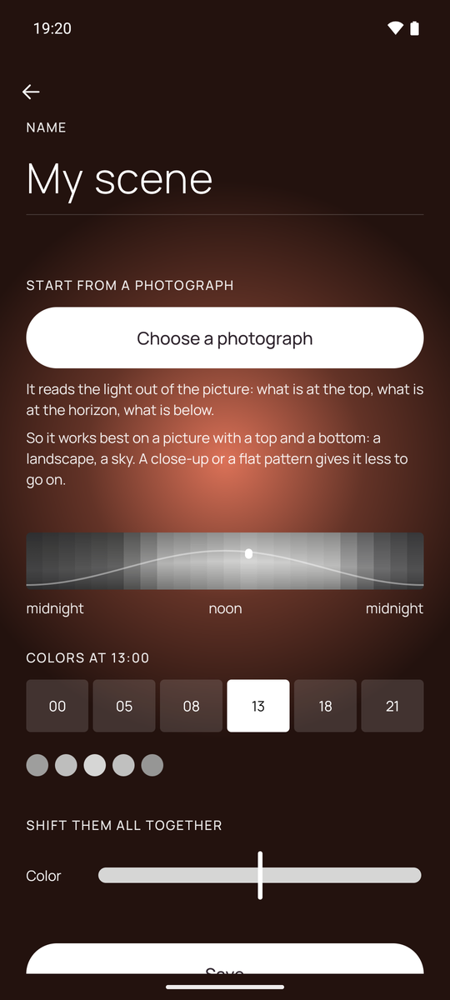

Five screens,
and then you forget it.
What the app actually looks like. You meet the first screen once, the others only when you feel like changing something.

The scene you are wearing is the background — not a thumbnail of it, the thing itself, at this hour. Under it, the whole day from midnight to midnight: drag it and you see where the light is going, at four in the morning or at noon.
Everything else is one tap away and stays out of the way: how often it moves, where it is applied, the grain.

A scene is not a palette. Each one carries a geometry of its own — a sun crossing an arc, a tide that moves the shore twice a day, stars that turn four minutes early because that is how long a sidereal day is.
They come in sets: the originals, the tropics, a Japanese garden, a synthwave night, a city, low light. Turn a set on and the wallpaper picks a different scene from it each day, on its own. How many there are is not a number worth printing: it goes up.

A wallpaper is a thing you see at seven in the morning and at eleven at night, so judging it at the hour you happen to be standing in tells you almost nothing.
Open a scene and it runs the whole day in a few seconds — here it is stopped at ten past three, while the phone says twenty past seven. Then, if you want it, one button.

A gradient on eight bits per channel can show its steps as bands. A little grain breaks them up, and on some scenes it is there whether you ask for it or not, because without it the sky would be striped.
Three steps that really look different, and you can see all three before choosing. Same for blur.

Pick a picture and the app reads the light out of it, top to bottom: what is at the top of the frame becomes the top of the sky. It works best on something with a top and a bottom — a horizon, a wall, a window.
The photograph is not copied anywhere. What gets saved is a list of colours, and those colours then live a day of their own.
That is the point of the whole thing. It changes on its own, every hour or at whatever pace you set, and there is no reason to open it again. Off is a real off: one switch, and it stops touching your wallpaper.